正式 Vue /#/graph，真实历史快照 7845/11412；1600×900、DPR≈1、同相机/筛选、freezeVisual=1。左侧为未改原基线构建，右侧为 P2.5。全部五组完整相机状态相同，见 程序核对。可点击原图，未裁剪或重绘。此页是证据查看器，不是产品原型，也不代表美术批准。
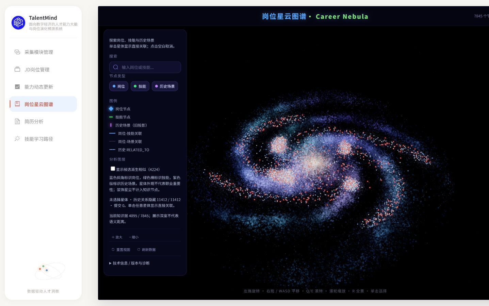
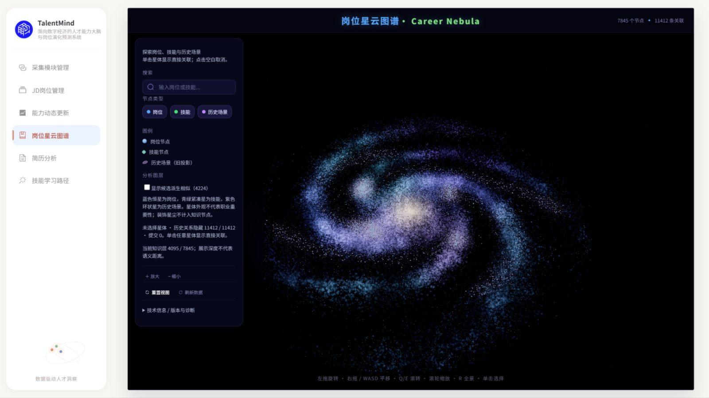
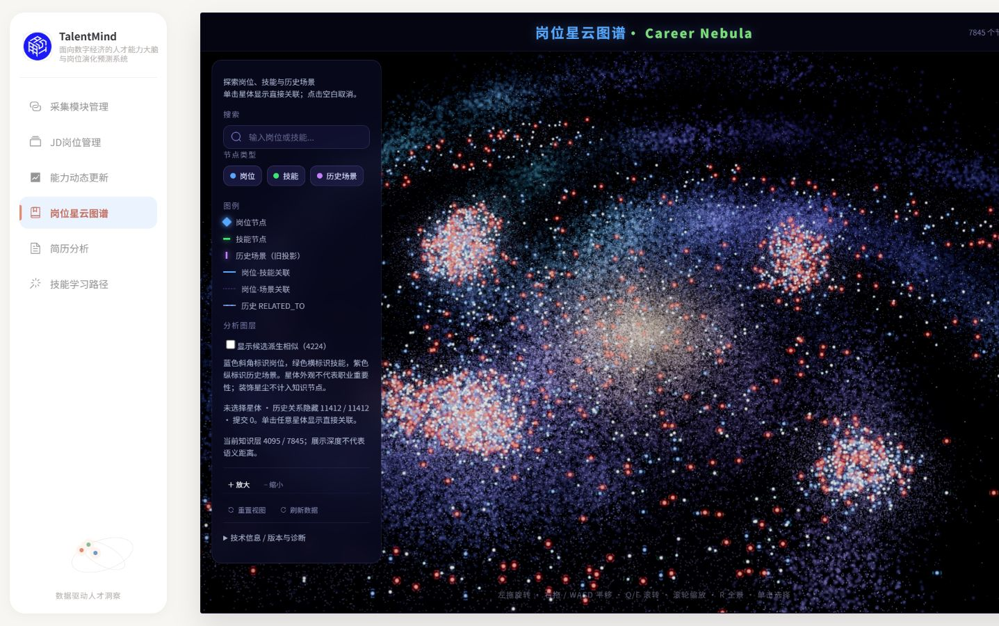
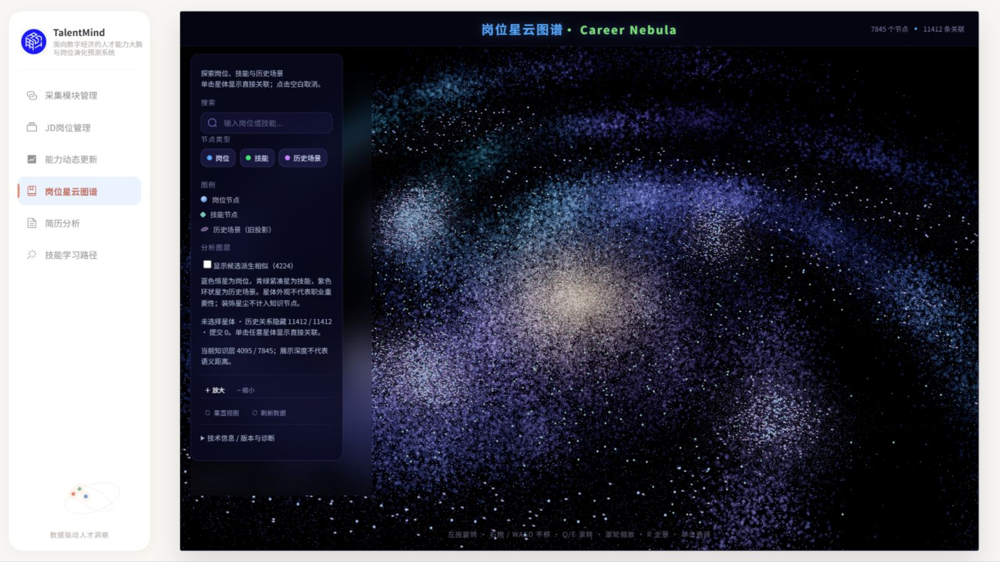
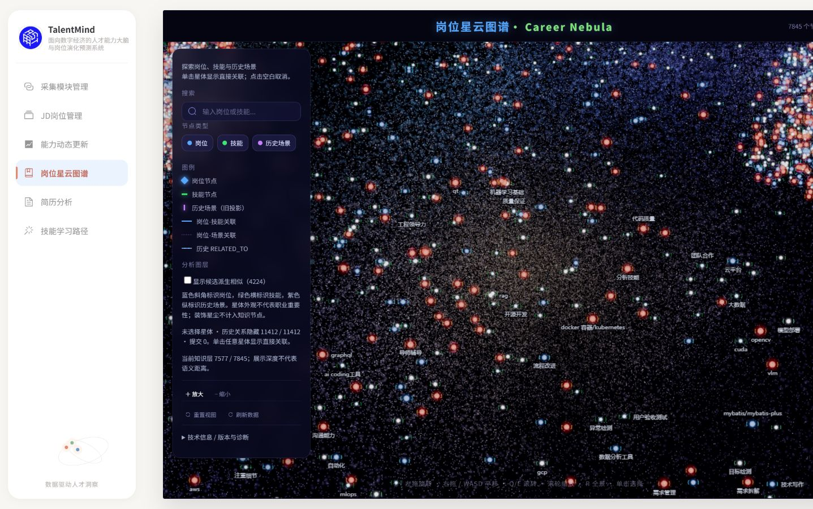
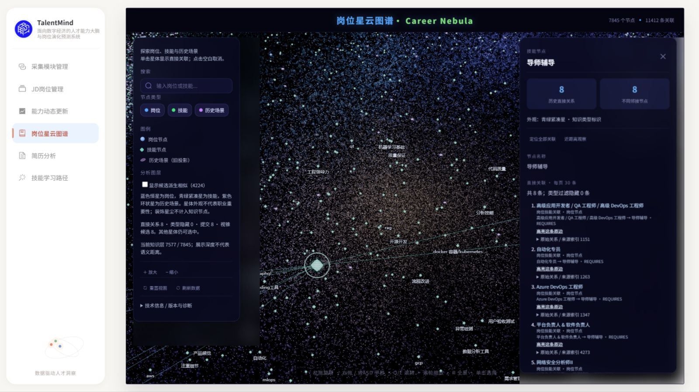
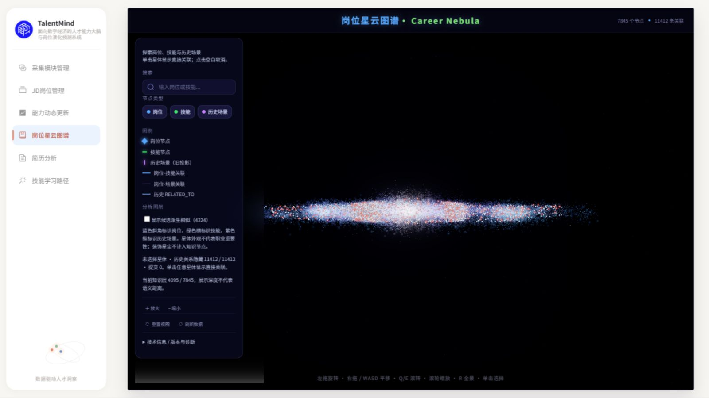
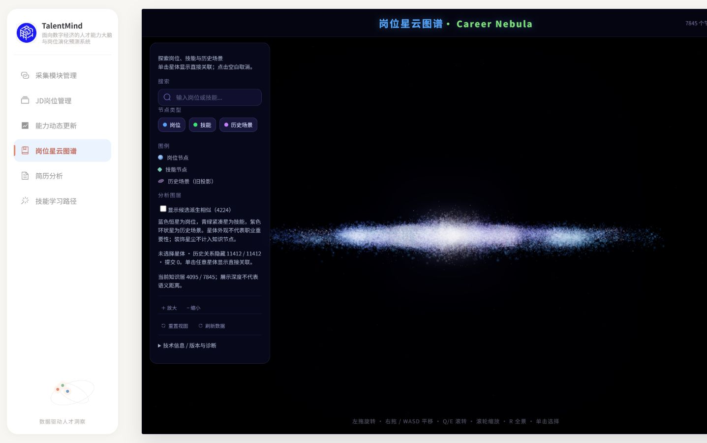
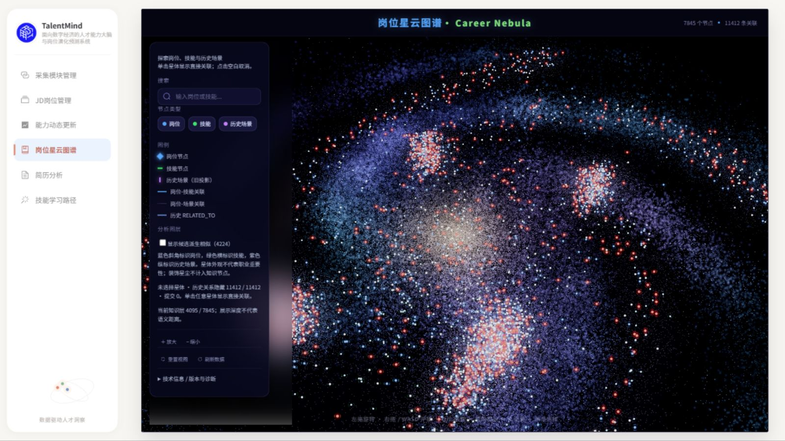
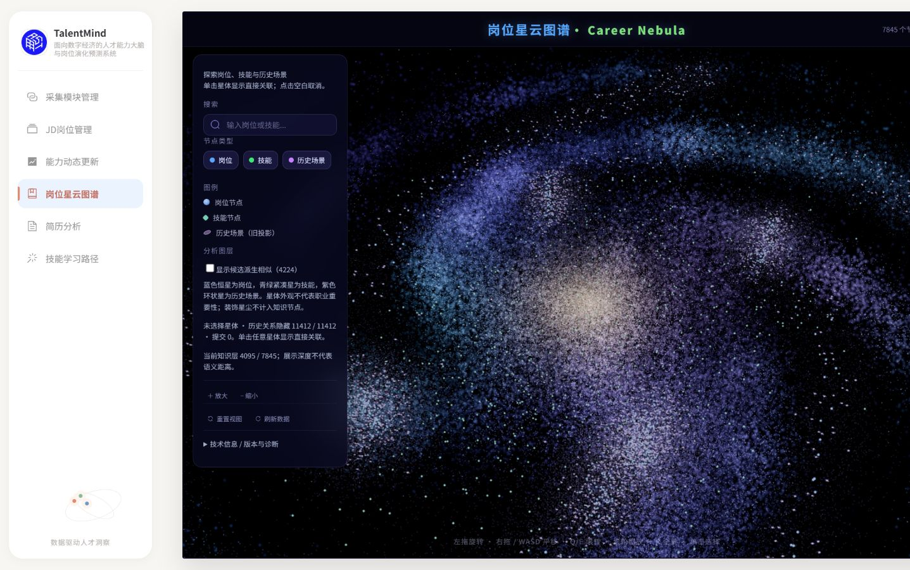
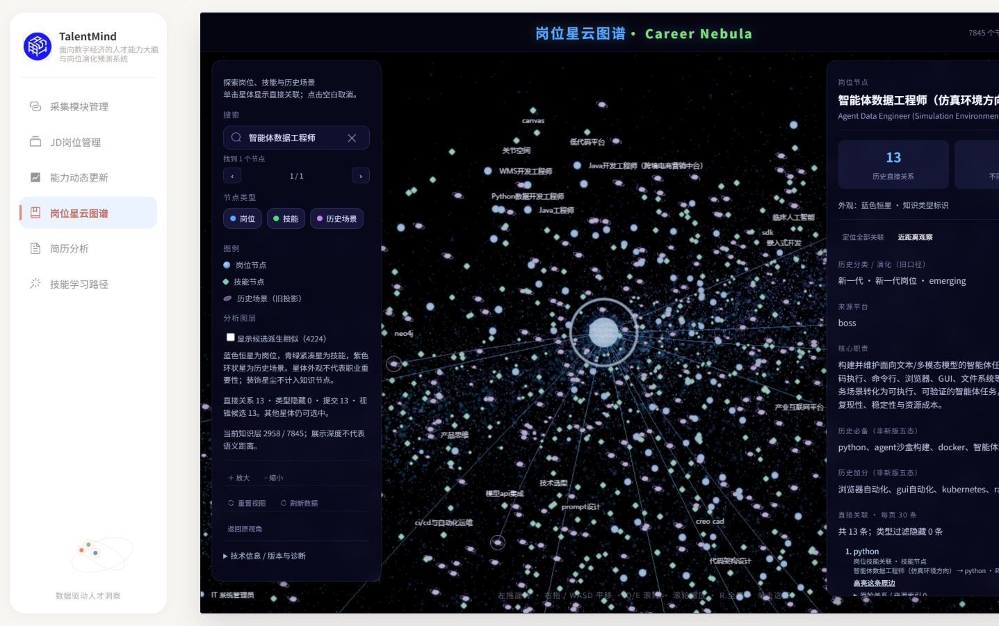
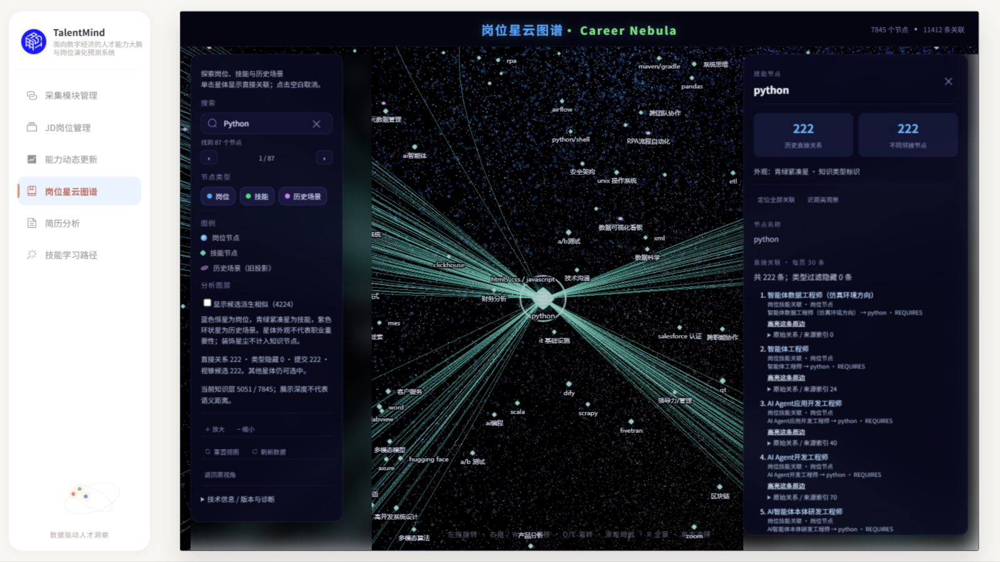
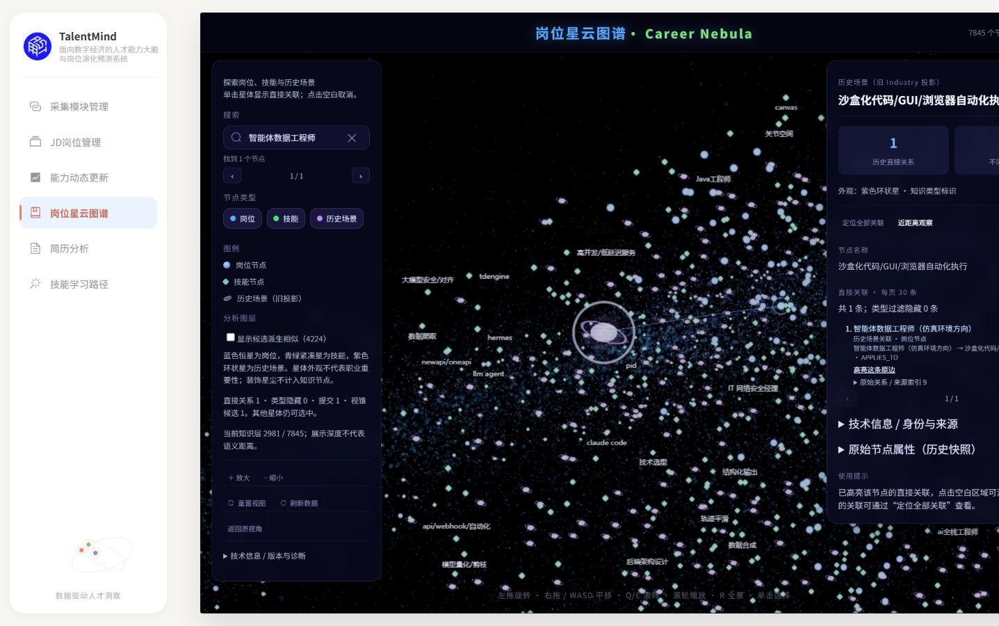
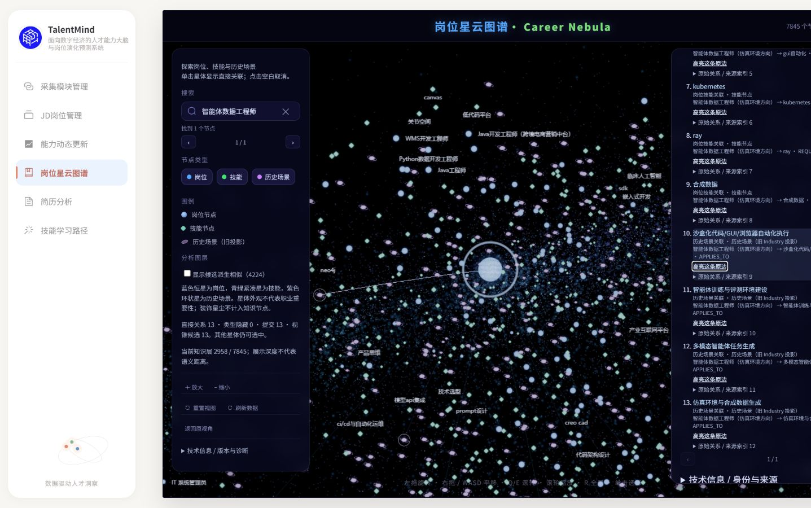
13 张原生浏览器截图按 400ms/帧组成 GIF，累计环绕 7.2 弧度。是操作关键帧采样回放，非连续实时录屏，不用于帧率测量。原始 PNG/JSON 保留。
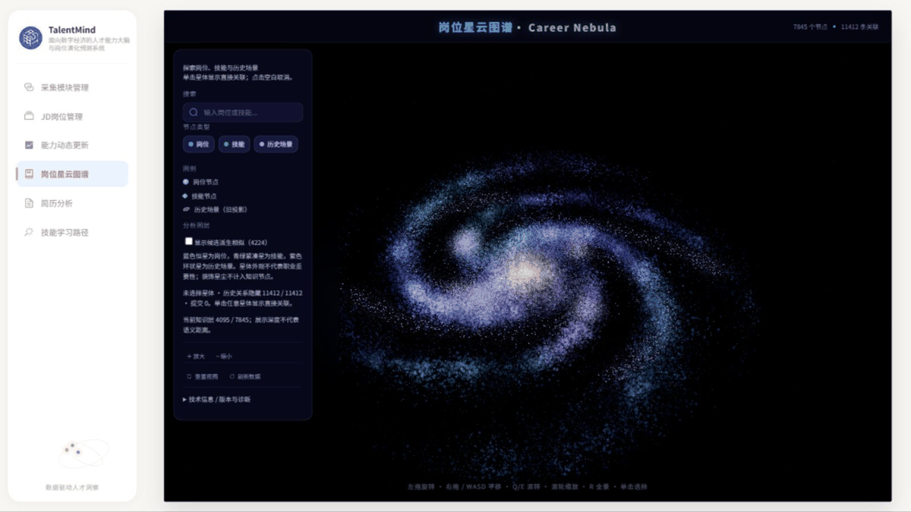